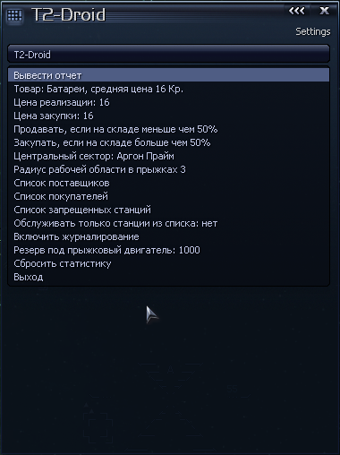
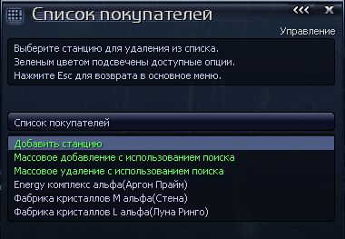
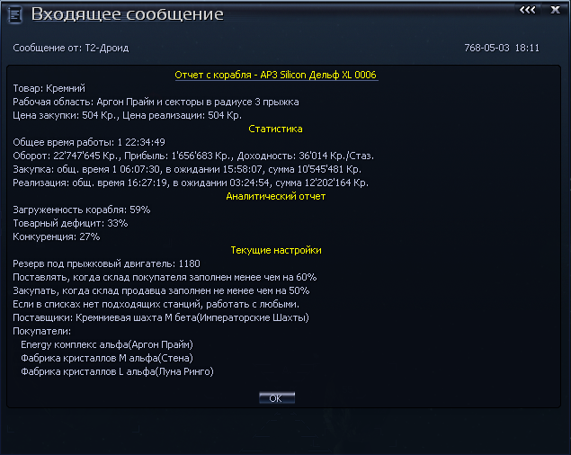

Т2-Дроид - Общая информацияT2-Дроид - это программа, управляющая кораблями с целью выполнения определенных транспортных и торговых операций. Гибкая система настроек позволяет не просто извлекать выгоду от перевозки товара, но и подключать корабли к решению стратегических задач, например таких как
Все параметры работы могут быть изменены без перезапуска программы. Работа дроида может быть прервана без потери настроек и статистики. Повторный запуск программы не требует повторного ввода данных. В любое время может быть получен отчет, предоставляющий детальную информацию о работе, выполненной за период времени с момента запуска или последнего сброса статистики. |
Т2-Дроид - Системные требования
|
Т2-Дроид - Порядок использованияПосле установки программы, в меню торговых команд кораблей появляется новая команда Т2: Запуск дроида, а в меню дополнительных команд Т2: Настройка. |
Т2-Дроид - Запуск программыДля активации дроида выберите в меню торговых команд команду Т2: Запуск дроида. При первом запуске дроида будут запрошены обязательные параметры. В первом диалоговом окне необходимо указать какой товар должен перевозить дроид (каждый дроид может оперировать только одним товаром). Последующие 2 диалоговых окна требуют ввода сектора и количества прыжков. Эта параметры определяют рабочую область, использующуюся для поиска поставщиков и покупателей. Повторный запуск дроида не потребует повторного ввода этих параметров. В дальнейшем и товар и рабочую область можно изменить через меню, которое вызывается через дополнительные команды корабля.После первого запуска следующие параметры будут установлены автоматически:
|
Т2-Дроид - Изменение настроек Для изменения параметров работы дроида используется команда Т2:Настройки в меню дополнительных команд корабля. При выборе этой команды откроется меню настройки дроида, которое включает в себя следующие опции:
|
Т2-Дроид - Работа со списками Все три списка: поставщиков, покупателей и запрещенных станций редактируются аналогично. После выбора соответствующей опции в главном меню настройки дроида, открывается редактор списка. В заголовке окна отображается наименование редактируемого списка. Зеленым цветом выделены опции, а ниже белым цветом перечисляются элементы списка, если таковые имеются. Каждый элемент списка является опцией, редактирования. Для добавления отдельной станции используется первая опция Добавить станцию. При выборе этой опции откроется карта галактики и пользователю предлагается выбрать станцию. Для удаления одной станции из списка достаточно выбрать ее в списке и нажать Enter. В редакторе списка есть две опции, которые позволяют добавлять сразу несколько станций, удовлетворяющих указанным условиям: Массовое добавление с использование поиска и Массовое удаление с использованием поиска. Обе опции работают похоже с той разницей что массовое добавление добавляет станции, если они еще не в списке, а опция удаления - удаляет найденные станции, если они уже в списке. Критерии поиска одинаковы: сначала предлагается указать тип станций - потребляющие или продающие товар, затем предлагается выбрать товар, который должны потреблять или продавать станции, после этого требуется выбрать центральный сектор и радиус области поиска в прыжках. После этого программа начнет искать станции удовлетворяющие заданным условиям. ВНИМАНИЕ! Поиск может выполняться некоторое время в зависимости от размера области поиска. Если в это время пользователь будет выполнять какие либо действия, то поиск будет прерван (специфика скриптового движка). После завершения процедуры поиска снова откроется окно редактора списка, в который будут добавлены или из которого будут удалены подходящие под условия станции, в зависимости от выбранной операции. |
Т2-Дроид - Отчет Каждый работающий дроид это не только источник дохода, но и полезная информация. Отчет позволяет увидеть не только текущие параметры работы дроида, но и узнать важную аналитическую информацию, которая может быть использована в стратегических целях. Используя эту информацию можно повысить эффективность работы или оставить регион, как бесперспективный в плане извлечения выгоды. Общий вид отчета можно увидеть на изображении справа. Постольку-поскольку настройки дроида были детально рассмотрены ранее, в этом параграфе будет рассмотрены только раздел статистики и аналитический отчет. В разделе статистика отображаются голые цифры. Общее время работы - это сколько времени работает дроид, включая время ожидания подходящих поставщиков и покупателей. Оборот показывает сколько денег было прокачано через дроида, то есть сколько суммарно было затрачено на покупку и получено от реализации товаров. Прибыль - это сколько дроид заработал за весь период работы. Доходность показывает среднее значение получаемой прибыли за стазуру (час). Две оставшиеся строки расшифровываются идентично. Первая из этих строк представляет информацию относительно закупочных операций, а вторая - операций реализации товара. Общ. время - это сколько времени было потрачено на выполнение соответствующих операций включая время на ожидание поставщиков и покупателей соответственно. Далее указано время, которое дроид провел в ожидании покупателей и поставщиков соответственно для первой и второй строки. Суммы указывают соответственно сколько средств было затрачено на покупку и получено от реализации товара. В разделе Аналитический отчет представлена информация, которая позволяет проанализировать эффективность работы дроида с установленными параметрами. Этот раздел появляется только после того, как дроид накопит необходимую информацию - через стазуру работы (час). Вся информация, предоставленная в рамках аналитического отчета рассчитывается на основе данных статистики, которые были рассмотрены выше. Загруженность корабля это когда дроид занят работой. Чем выше этот показатель, тем лучше. Низкое значение загруженности свидетельствует о том, что корабль по большей части простаивает. Например, если корабль простаивает половину рабочего времени, то его загруженность будет равна 50%. Нормальный показатель загруженности - от 100 до 90%. Меньшие значения свидетельствуют о том, что пора пересмотреть параметры работы или сменить регион. Как видно из приведенного отчета (на изображении), корабль загружен всего на 59%. Это значит что 41% времени он простаивал, а игрок терял прибыль. В следующей строке отображается показатель дефицита или профицита товара в рабочей области (включая станции из списков, если таковые за пределами рабочей области). Дефицит - это когда спрос превышает предложение. Профицит наоборот - предложение превышает спрос. Высокий показатель дефицита или профицита может означать что в рабочей области недостаточно фабрик производящих или потребляющих товар соответственно. И конечно, все зависит от установленных цен. Если установленна слишком высокая цена реализации, то дроид может столкнуться с отсутствием покупателей. В приведенном отчете товарный дефицит достигает 33%. Этот вывод так же можно сделать на основе высокого показателя времени ожидания поставщиков и общего времени, затраченного на закупку, что видно во второй строке в разделе статистика. В третьей строке аналитического отчета отображается уровень конкуренции. Конкуренция выражает влияние внешних факторов на работу дроида. Высокий уровень конкуренции может свидетельствовать о том, что слишком много торговцев мешают дроиду (это так же могут быть другие корабли под управлением других дроидов). С другой стороны, высокая конкуренция может свидетельствовать о недостатке подходящих станций в рабочей области. Уровень дефицита или профицита влияет на этот показатель в сторону уменьшения. Если бы в приведенном отчете дефицит был бы меньше, то показатель конкуренции был бы выше 27%. На основе приведенного отчета можно сделать вывод, что дроид работает не эффективно. Это так же явно следует из показателя доходности за стазуру - она слишком мала. Средний показатель доходности при нормальных условиях как правило выше 100 тысяч за стазуру. Какое же решение можно принять в данном случае? Расширение области на несколько прыжков не даст хорошего результата, так как этот регион ограничен сверху небольшим количеством тупиковых боронских секторов, справа пиратскими секторами а снизу пограничными секторами паранидов. То есть в область работы попадет не так уж много потребителей при том что в регионе дефицит. Строить шахты, которые снизят уровень дефицита так же не имеет большого смысла на данном этапе, так как хоть и дефицит, но и конкуренция высока (время ожидания при реализации весьма существенно). То есть постройка кремниевых шахт хоть снизит дефицит, но явно не уменьшит конкуренцию. Наиболее рациональным видится перевод этого корабля на работу с другим товаром. Формула рассчета загруженности корабляL = 100 - ((DTW + STW) * 100 / TT)Алгоритм рассчета дефицита или профицита DoP = ABS((STW * 100 / ST) - (DTW * 100 / DT))Формула рассчета конкуренции K = (100 - L) * (100 - DoP) / 100Расшифровка: L - показатель загруженности корабля % K - показатель конкуренции % DoP - показатель дефицита или профицита % STW - время ожидания поставщика сезур DTW - время ожидания покупателей сезур TT - общее время работы сезур ST - время работы по закупкам сезур DT - время работы по реализации сезур |
Т2-Дроид - Примеры использованияНиже приводятся некоторые примеры использования дроида для решения различных задач. |
Торговля батарейками с разгрузкой своих батареечницСнарядите транспорт для работы с батарейками по закупочной цене 16кр. Убедитесь, что на ваших батареечницах установлена цена реализации 16кр. Добавить свои батареечницы в список поставщиков. Первым делом дроид будет обслуживать фабрики из списка. Так как все эти фабрики продают по одинаковой цене, то в дроид будет разгружать наиболее заполненные батареечницы. Количественный лимит в 50% (устанавливается по-умолчанию) ограничит рейсы на ваши фабрики до тех пор, пока они не произведут достаточное количество батареек. А пока собственные батареечницы еще не заполнились, дроид будет разгружать NPC-батареечницы. Тут-то уж он будет искать наиболее выгодные предложения и приносить максимальную прибыль. |
Поднять рейтинг у паранидовПри старте игры в области Аргон Прайм есть хорошая возможность поднять рейтинг у паранидов. В секторе Императорские Шахты расположены несколько рудных шахт. Это пограничный сектор паранидов, что означает возможность стыковки со станциями даже при рейтинге -2. Шахты дают хороший доход, а хороший торговый оборот быстрее повышает рейтинг. Снарядите транспорт для торговли рудой. Потребителями закупаемых у паранидов ресурсов будут высокотехнологичные фабрики в радиусе трех прыжков от Аргон Прайм. Однако, по левую сторону от Аргон Прайм совсем нет батареечниц, что может снизить эффективность кораблей, оборудованных прыжковым двигателем. Если на установку батареечницы в секторе Юго-Западное Облако недостаточно средств, вместо одного корабля с большим трюмом лучше снарядить парочку менее вместимых, но более быстрых. |
Закупка дефицитного товара 25Мвт. щитовСнарядите быстрый транспорт с прыжковым двигателем (например ОТАС-овский малый транспорт) на покупку щитов. Если со щитами полный дефицит, то укажите максимальную закупочную цену (например 9876543). Если щиты требуются не срочно, то можно оставить среднюю цену. Что бы исключить возможность реализации, укажите запредельную цену реализации (например 9876543). Обязательно снизьте количественный лимит поставщика (можно указать 0 для отключения проверки количества) иначе высокая закупочная цена не сработает. Таким образом, дроид будет скупать щиты как только они будут появляться в доках или на фабриках. Лучше создать список поставщиков, перечислив в них подходящие фабрики. Но если не боитесь потерять транспорт вместе с дефицитным грузом или на небезопасных маршрутах уже стоят батареечницы для дозаправки транспортов, то можно выбрать любую рабочую область вплоть до всей вселенной. Да, не забудьте обеспечить фабрики по производству щитов необходимыми ресурсами. Просто добавьте их в список покупателей других своих транспортов, перевозящих соответствующие ресурсы. |
Разгрузка собственных оружейных фабрикСлишком много фабрик? Нет времени следить за всеми, а склады так малы? Дроида можно использовать для разгрузки собственных оружейных заводов. На фабриках следует установить цену реализации по средней. Можно запретить торговлю с другими расами, хотя врядли кто-то позарится на товар по средней цене. Что бы транспорт не продавал вооружение, установите дроиду запредельную цену реализации (например 98765432). Если фабрики по производству оружия расположены в защищенном регионе, то подойдет самый дешевый транспорт. Так как он большую часть времени будет проводить в ожидании поставщика, то можно даже незащищенный. Таким образом, вы получите мобильный склад, а ваши фабрики никогда не остановятся из-за занятости складов. ВНИМАНИЕ! Не стоит приписывать транспорт к одной из оружейных фабрик, если на ней запущен автоперевод денег. Выбранный для этой задачи транспорт будет использовать счет станции. А так как реализация оружия выполняться не будет, то очень быстро счет опустеет и фабрика остановится. |
Поставка кристаллов на заправкиСнарядите быстрый TP на развозку кристаллов со своего комплекса на заправочные станции, расположенные на границах. Добавьте батареечницы-заправки в список покупателей кристалов. Установите среднюю цену для закупки и реализации, а так же минимальные лимиты для складов поставщиков и покупателей в 10-20%. Это компенсирует малый объем трюма. Высокая стоимость кристалов не будет оказывать значительного влияния на ваш кошелек (в случае проблем с деньгами). Прыжковый двигатель значительно ускорит процесс - дроид будет дозаправляться на обслуживаемых заправках и каждый рейс будет состоять фактически из полета от гейта до станции. |
Как разгрузить трюм корабляЕсли вы хотите назначить транспорт на работу с другим товаром, а трюм заполнен предыдущим товаром, выкидывать который жалко или дорого, измените настройки дроида. Удалите станции из списка покупателей или отключите режим работы только со станциями из списков, если он был включен. Установите нереально-низкую закупочную цену, что бы дроид не мог найти подходящих поставщиков. Остается только подождать, пока дроид не распродаст весь товар. |
Найти хорошее место под фабрикиПрежде чем ставить фабрики, неплохо-бы убедиться, что в регионе есть спрос на продукцию, а необходимые ресурсы имеются в достаточном количестве. Для этого понадобятся несколько транспортов: по одному на каждый продукт и ресурс. Дайте поработать дроидам несколько стазур, после чего проанализируйте аналитические отчеты по каждому из задействованных дроидов. Дроиды не только соберут необходимую информацию, но и подзаработают денег на покупку новой фабрики. Учитывайте показатели дефицита и профицита, а так же время ожидания поставщиков и покупателей, что бы сделать выводы о привлекательности региона. Если место окажется хорошим, то после установки вы сможете приказать этим же дроидам обслуживать вашу новую фабрику, в добавок к поддержанию экономики в регионе. |
Т2-Дроид - Установка
|
Т2-Дроид - Удаление
|
Т2-Дроид - История измененийv2.02 от 2011-01-30
Спасибо пилоту LM за помощь в борьбе с багами!
|
Т2-Дроид - ПримечанияИспользованные команды: COMMAND_TYPE_TRADE_58, COMMAND_TYPE_SHIP_57 С нетерпением жду отзывов! |